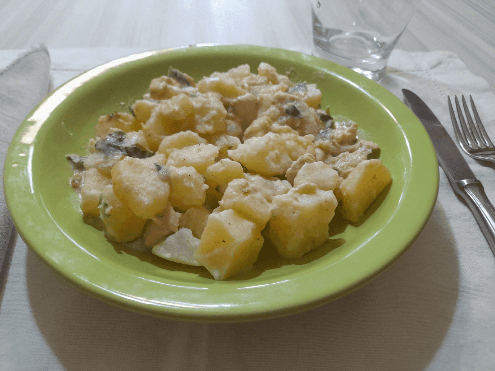

El pollo al verdeo es el plato favorito de la casa.
Ligero y de sabor suave, es ideal para quedar bien en cualquier mesa.
Ingredientes (para 4 personas):
- 1 Kg de pechuga de pollo
- 6 plantitas de cebolla de verdeo
- 4 papas
- 2 dientes de ajo
- 350 cc de crema de leche
- Aceite
- Sal y pimienta a gusto
- (Experimental) 1 chorro de vino blanco

Preparación:
-
Cortar la pechuga en cubitos, calentar una olla con aceite
y sellar el pollo ahí a fuego fuerte. Luego, retirar el pollo de la olla.
-
Cortar las papas en cubitos y hervirlas en otra olla, hasta que se ablanden
(no mucho) y se redondeen los bordes.
-
En la misma olla del pollo, saltear a fuego fuerte la cebolla de verdeo cortada en rodajas
y el ajo picado durante un par de minutos.
La cebolla de verdeo no debe quedar muy blanda.
-
(Experimental) Agregar el chorro de vino blanco y dejar al fuego
uno o dos minutos, para que se evapore el alcohol.
-
Agregar el pollo, la sal y la pimienta. Dejar la olla a fuego medio hasta que el pollo
se termine de cocinar (aproximadamente 10 minutos), revolviendo varias veces en el medio.
-
Agregar la crema de leche y las papas a la olla. Revolver unos minutos a fuego medio para integrar
todo. Si se prefiere una consistencia más líquida, se puede agregar un chorro de leche.
¡Listo! Ya se puede servir para disfrutar con la familia o amigos. ¡Buen provecho!